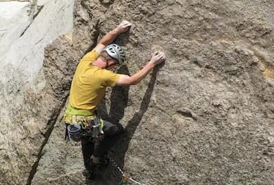
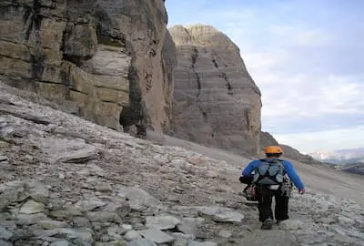

Trollveggen
The Troll Wall
Trollveggen — The Troll Wall — rises out of the Romsdalen Valley in western Norway as a sheer, jagged fortress of dark rock and towering spires. It forms part of the Trolltindene range and is widely recognised as Europe’s tallest vertical rock face, with roughly 1,000–1,100 metres of near‑vertical and overhanging terrain dropping straight into the valley floor. The wall’s dramatic silhouette and the folklore surrounding it give the whole area an atmosphere that feels ancient, remote, and imposing.
The Vertical Challenge
Climbing here is not a casual undertaking. Trollveggen has long been a proving ground for elite climbers, with routes that demand technical precision, endurance, and absolute respect for the mountain. The face includes long, complex lines, unstable rock sections, and overhangs of up to 50 metres, making it one of the most serious big‑wall objectives in Europe. Scandinavian mountaineering culture was shaped here, and many of the world’s hardest climbs trace their origins to this valley.
A Landmark of Mountaineering History
The wall became internationally famous in the 1960s as climbers from across the world attempted new lines on its intimidating face. Its reputation grew further through the 70s and 80s, when BASE jumpers began leaping from its upper ledges — a practice later banned after a series of accidents and costly rescue operations. Despite the restrictions, Trollveggen remains a magnet for climbers, hikers, and adventure travellers drawn to its scale and history.
The Experience
Standing beneath Troll Wall, you feel the weight of the mountain above you — a kilometre of vertical stone rising into shifting cloud. The valley is long and narrow, framed by steep peaks on both sides, and the atmosphere changes constantly with the weather. Whether you’re approaching a climbing route, hiking to one of the high viewpoints, or simply exploring the valley floor, the sense of exposure and grandeur is unmistakable. Trollveggen isn’t just a climb; it’s an encounter with one of Europe’s most dramatic natural structures.